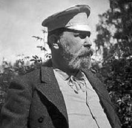
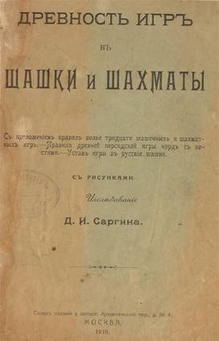
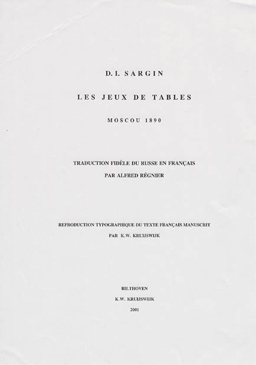
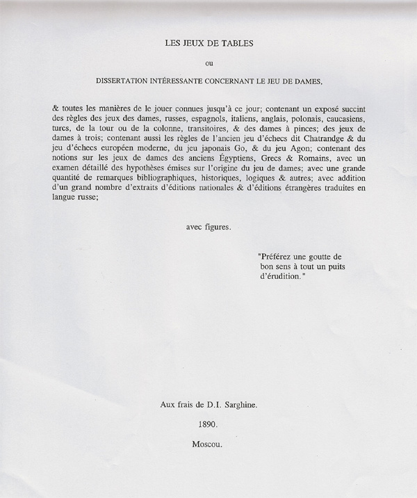
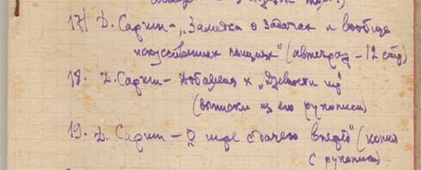
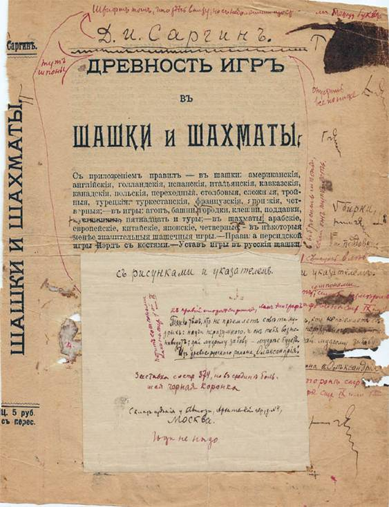
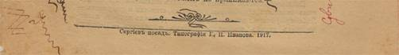

|
Нудельман Д. Жизнь «Древности игр…» с
предысторией и постскриптумом. 7 стр
Эта
статья подготовлена к 150-летию со дня рождения известного русского исследователя
истории шашек и шахмат Давыда
Ивановича Саргина (1859 - 1921), автора монументального труда «Древность
игр в шашки и шахматы».

«Древность
игр...» известна всему интеллектуальному миру как первый российский труд,
посвященный истории игр ( в основном шашек и шахмат). Однако,
судьба этой замечательной книги сложна и полна загадок. Cаргин выступил в
указанной книге и как библиограф. Он продолжил начатую Гоняевым работу, которая была
передана ему. В подстрочных примечаниях к тексту Cаргин указал
литературу, выпущенную в России и за рубежом, с анализом её ценности для
шашек.
Книга
готовилась к изданию в годы Первой мировой войны, и, по словам самого
автора, в ней отсутствовали дополнительные справочные данные. Желая
как можно скорее выпустить книгу, Саргин выкупил в 1916 году по
договоренности у издателя Иванова 100 из отпечатанных, но
несброшюрованных и непереплетённых 350 экземпляров своей книги. На
втором листе он поместил текст, подобный современному копирайту: «Перепечатка
и переводы воспрещаются. Подлинный экземпляр должен иметь штемпель
исследователя». Историк В.
С. Пименов установил, что до сих пор уцелело не более 25 - 30 экземпляров книги,
имеющих штемпель исследователя.
Обладателями подлинного издания являются
Национальная Библиотека России в Санкт-Петербурге, Государственная
Библиотека России в Москве, Публичная Библиотека в Кливленде (США),
Национальная Библиотека Нидерландов в Гааге, Библиотека Амстердамского
Университета, ещё несколько библиотек и владельцев частных коллекций.
Судьба невыкупленных оставшихся 250 экземпляров книг его исторического
труда после революции и национализации имущества типографии была
печальной: они были похищены из здания бывшей типографии и продавались
отдельными листами на книжных базарах.

Труд
Саргина «Древность игр в шашки и шахматы», как, впрочем, и другие его
книги, так и не был переиздан. Лишь спустя почти семь десятилетий
основные выводы этого труда были кратко изложены в книге известного
ленинградского шашиста А. И.
Куличихина «История развития русских шашек – М.: ФиС,
1982». С историей жизни Саргина можно познакомиться в
книге, изданной в 1987 гoду, в которой Владимир Голосуев подробно рассказывает о Саргине.

Автор
этой статьи должен признаться, что много лет собирает материалы о Саргине
и его книге. В 2000 году мне посчастливилось вступить в контакт с потомками
Саргина, проживающими в Москве, и это позволило раскрыть некоторые малоизвестные
стороны деятельности Саргина и его личной жизни. Маленькое
дополнение к замечательному рассказу Голосуева можно внести по поводу
смерти Саргина. Работая с пистолетом, он нечаянно прострелил себе
руку. Отсутствие медикаментов в тот тяжелый период времени способствовало
заражению крови, и спасти Давыда Ивановича было невозможно. Выше
приводится изображение обложки книги Саргина.

Мне
удалось пролить свет на новые факты о судьбе этой книги, пока неизвестные
российским читателям и историкам. Базой фактов из предыстории книги
служат материалы, подаренные мне видным шашечным историком и
библиографом, бывшим куратором Национальной Библиотеки Нидерландов Карелом ван Дел Круйсвиком.

В
своем исследовании Саргин упомянул об известном французском
любителе шашечной игры Альфреде
Ренье (1825-1898). До сего дня российским историкам неизвестен
факт переписки Саргина с ним в 1888-1895 гг. – как и её
содержание. Как видно из последующих материалов, к 1890 году Саргин
закончил значительную часть своего исследования, но нигде и никогда не
сообщал об этом. Именно этот первый набросок (19 глав) он и выслал
Альфреду Ренье, вероятно, с целью его публикации во французском журнале
Баледента. Саргин и ранее пользовался услугами А. Ренье, русский
язык которого был намного лучше французского Саргина , для
публикации этюдов и задач во французских журналах "La
Patrie", "La Strategie", "Les Jeu de Dames"»
. Ренье работал над переводом исследования Саргина, но опубликовать
эту работу во французских журналах Альфреду не удалось. Какова бы
ни была судьба архива Ренье, но в итоге он попал в руки Пьера Люко (1903-1990),
известного французского коллекционера шашечной литературы и шашечного
деятеля Франции, бывшего Президента Всемирной Шашечной Федерации.
В середине 1990-х архив оказался в коллекции Круйсвийка. Русский оригинал работы Саргина не
сохранился. Состояние рукописи Ренье ко времени её
приобретения Круйсвиком оказалось неудовлетворительным, и для того
чтобы сохранить её для истории, Карел переложил текст старого
французского на современный и создал только четыре архивных
экземпляра, один из которых подарил мне. Со временем оригинал
рукописи Ренье будет передан в Национальную Библиотеку Нидерландов.

Титульный
лист работы К. Круйсвика и титульный лист работы Саргина 1890 г.,
восстановленный с работы Ренье, показаны выше.

Интересен
и постскриптум «Древности игр...». О существовании какого-то
добавления к работе Саргина я знал по запискам Александра Круталевича. Как и предыстория книги
Саргина, подтверждение наличия самих добавлений оказалось сложным.
Братья Александр и Борис Круталевичи были племянниками А. В. Рокитницкого, известного
белорусского шашечного деятеля и автора. Они были вхожи в дом
Саргина. Он упомянул о них в сносках книги. В 1937 году
Александр был несправедливо обвинен по доносу и пропал в жерновах
сталинской мясорубки. Следуя его указаниям, вдова Александра
Круталевича передала библиотеку мужа Рокитницкому. Одну тетрадку
из этой библиотеки Рокитницкий подарил мне за несколько лет до
своей смерти. В конце этой тетрадки Александр привел список
рукописей его библиотеки. Под номером 18 запись: Д. Саргин – Добавления к «Древности игр» (выписки из его
рукописи).
Однако
мои дальнейшие попытки попасть на след добавлений были безуспешны: на мои
расспросы Аркадий Венедиктович Рокитницкий отвечал, что упомянутые в
тетрадке «Добавления» не обнаружены им среди переданных материалов.
Казалось бы, розыски «Добавлений» зашли в тупик. В 2003 году, в
статье о «Древности игр» , я просил читателей просмотреть свои архивы на
предмет наличия этих «Добавлений». Мои мечты исполнились, когда
российский шахматный историк Исаак
Линдер обнаружил «Добавления» у себя в архиве и передал их
мне. Они попали Линдеру от В.
Нейштадта после смерти последнего. Таким образом, материалы,
переданные мне в 2008 г. Исааком Линдером, пролежали в архивах
Нейштадта и Линдера в общей сложности 91 год (!), с 1917 по 2008 гг. Эти «Добавления»
(вернее, то, что от них осталось) были подарены Нейштадту самим
Саргиным. Уцелевшая часть «Добавлений» хранилась до 1959 года в
собрании автографов В. Нейштадта, а с 1959 по 2008 годы - у Исаака
Линдера.
Над
добавлениями к «Древности игр...» Саргин работал с 1916 по 1917
годы. Что же представляли собой эти «Добавления», и каковы
были планы автора и издателя закончить труд? Это корректурные
листы «Древности игр...», с ручными поправками Саргина. Поскольку
корректура находилась в ветхом состоянии, Нейштадт перепечатал листы и
внес в них поправки Саргина. Анализ «Добавлений» позволяет сделать
следующие выводы. Саргин планировал добавить к книге эти материалы,
изъяв часть листов из оставшихся невыкупленными 250 экземпляров у
издателя Иванова. В «Добавления» входили:
1) подробный список авторов и лиц;
2) новый титульный лист и обложка к оставшимся 250 экземплярам;
3) оборотный лист, где Саргин писал о запрещении переводов и где стоял
его штемпель был изъят (так же как и старый титульный лист) и заменён
текстом под заголовком: «К выпуску книги»;
4) содержание на двух страницах;
5) лист «Важнъйшiя опечатки и исправленiя»;
6) указатель предметов с дополнительными примечаниями;
7) в конце содержания запись «Сергiевъ посадъ. Тiпография И. И. Иванова.
1917».
В
обновленной версии книги указано, что в ней содержится 458 страниц и 600
примечаний (частью непронумерованных). Всё готовилось к выпуску
новой редакции «Древности игр...» в 1917 году, но история решила
иначе. Октябрьская революция перечеркнула мечты Саргина о выпуске
его работы в исправленном и дополненном виде. Поскольку корректура
осталась у Саргина и его добавления не были отпечатаны, он потерял всякую
надежду на успех. Выше приведена копия сохранившегося корректурного
листа с правкой Саргина и часть листа, указывающего дату выпуска этих
корректурных листов издателем И. И. Ивановым.
Открытия
новых материалов из труда Саргина от первого варианта книги до
«Добавлений» в итоге позволяют переосмыслить и увидеть «Древность игр в
шашки и шахматы» в полной перспективе по планам Саргина. Автор
статьи надеется, что со временем такая задача будет выполнима.
Давид Нудельман, город Хэмдэн, штат
Коннектикут, США
David Nudelman, Hamden, CT 06514, USA, email: vitya_david@yahoo.com, skype: vityadavid.
Саргин Д.И. Древность игр в
шашки и шахматы. –
М.:Типография И. И. Иванова, 1916.
Куличихин А. И. История
развития русских шашек. – М.:ФиС,1982.
Барский Ю.П., Голосуев В.М.,
Мамонтов А. В., Пименов В. С. Русские шашисты Д.Саргин, П. Бодянский,
А. Шошин. – М.:ФиС, 1987.
|